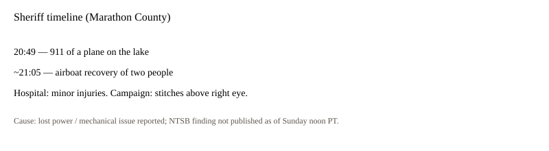

Wisconsin · accident · 13 September 2026
Rep. Tom Tiffany and his pilot swam from a Beechcraft that landed in Lake Wausau.
What is agreed across desks
The Marathon County Sheriff’s Office said a 911 call reporting a plane in Lake Wausau came at 20:49 local time on Saturday, 12 September. A Wausau Fire Department airboat recovered two people at about 21:05. AP, BBC, NPR, and CNN match on those times and on the identities: U.S. Rep. Tom Tiffany, Republican of Wisconsin’s 7th District and the Republican nominee for governor, and pilot Leonard Boltz.
Tiffany wrote on X that he was returning from the La Crosse County Lincoln Day Dinner, that the plane lost power on approach to Wausau Downtown Airport, that the pilot made an emergency water landing, that they called 911, and that they left the aircraft and swam to shallows as it began to submerge. He thanked the pilot and first responders. He said both men had minor injuries.
His campaign said he received stitches above the right eye. Both men were taken to Aspirus Wausau Hospital and released. The sheriff said a no-wake buoy was placed near the aircraft, which remained in the lake, and asked boaters to stay away until removal. BBC identified the type as a Beechcraft K35 Bonanza, a single-engine airplane with seats for up to five. Two people were aboard.
What is only a quote
“God was watching over us tonight” is a personal sentence. It is not evidence. Sheriff commentary that first information indicates a mechanical failure is a preliminary label. It is not a teardown report.
CNN cited dispatch audio in which responders said a 911 call came from inside the plane and that a boat was returning with two people. That supports the sheriff timeline. It does not assign a failed part.
Mechanism a reader needs
Wausau Downtown Airport sits beside the Wisconsin River system and Lake Wausau. A power-loss on short final over water can make a lake the only open space. A single-engine airplane can float for minutes or seconds depending on doors, tanks, and attitude. Occupants who can open a door before the cabin floods have a short window. That is why the 16-minute gap between the 911 stamp and the airboat pickup is the operational fact that matters, not the politics of a gubernatorial race.
Tiffany faces Democrat David Crowley, the Milwaukee County executive, on 3 November. He has a presidential endorsement. None of that changes the lake. Using the landing as a campaign omen is a separate genre.
NTSB probable-cause reports on general-aviation accidents often arrive months later. Until that document exists, “lost power” is a pilot-and-passenger account plus a sheriff line.
General-aviation accident pages often grow a second life as political content. This one will too, because the passenger is on a ballot in November. The sheriff’s times do not care about that ballot. Sixteen minutes from a 911 stamp to an airboat is the operational performance that can be checked against dispatch logs.
A Bonanza K35 is an older single-engine design. Age of type is not cause. Maintenance logs, fuel state, weather at 20:49, and the pilot’s certificate are the usual NTSB fields. None of those fields were published in the Sunday wires beyond “lost power” and “mechanical issue” as first information. Filling them in from the internet would be invention.
Lake landings can end with hypothermia, unseen bleeding, or a second occupant still in a cabin. Here both occupants were accounted for, walked through a hospital, and released. That is why the story is an accident with minor injuries and a submerged airframe, not a mass-casualty event. The airframe remains a hazard to boats until it is lifted, which is why the sheriff posted a no-wake request.
What this story is not
It is not a mid-air breakup. It is not a finding of pilot error or of a specific failed magneto. It is not a statement about Tiffany’s fitness for office. This page uses a labeled schematic so the HTML displays without copying a news photograph of the aircraft.

Source articles and scores
Images: original schematics. Type-photo pages exist at AP and NPR; those pixels were not copied.